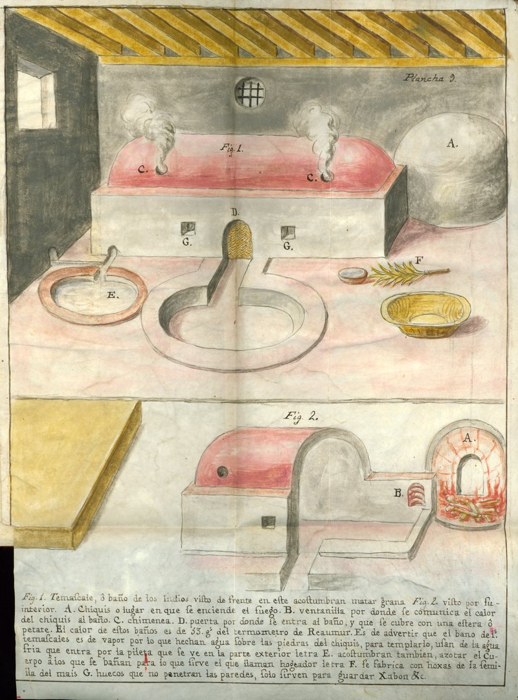
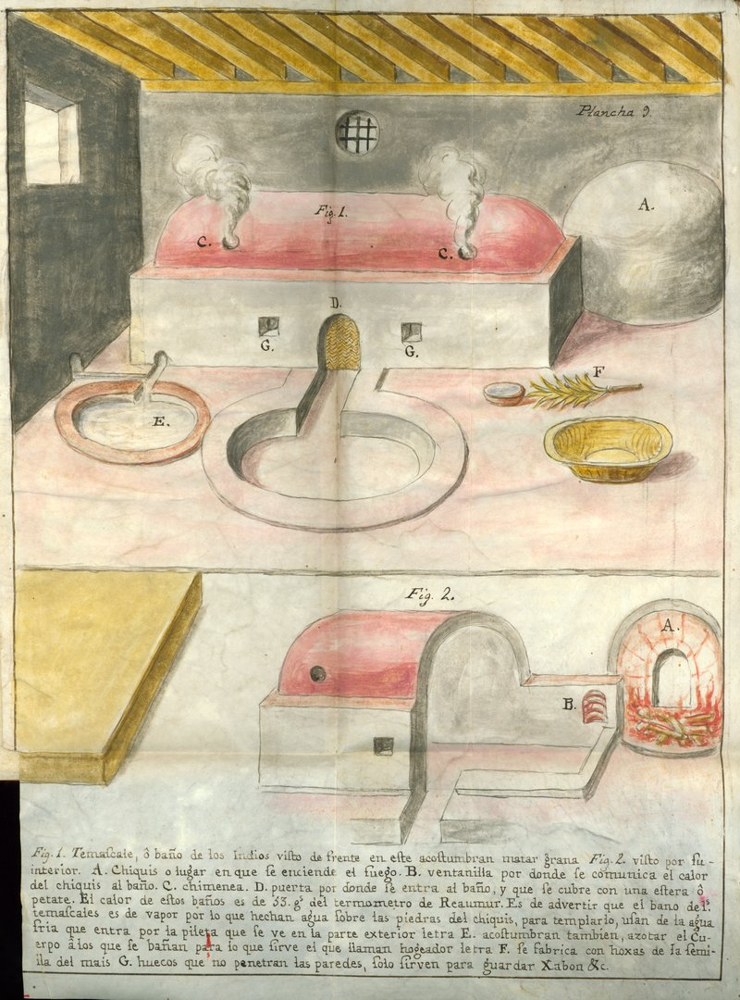

The Persistence of Nahua Culture
 

On Plate 7, a man (fig. 1) dressed in a blue striped white tunic and cochineal-dyed pants scrapes the cochineal beetles from the nopal cactus using a deer tail. Fig. 2 depicts a deer tail and fig. 3 the gourd bowl in which the cochineal are collected (“Xicalpestle en que aparan la Cochinilla”).
Plate 9 shows the next step in the process. After removing the cochineal from the nopal cactus, the insects are killed in a traditional steam bath (fig. 1 “temascale, o baño de los Indios”). Fig. 2 provides a more detailed view of the steam bath.
Newberry Library: Vault Ayer MS 1031